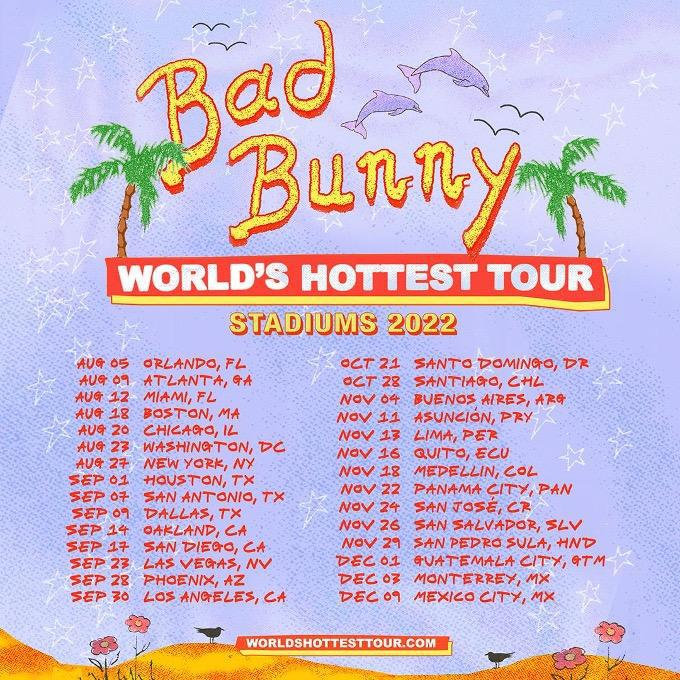
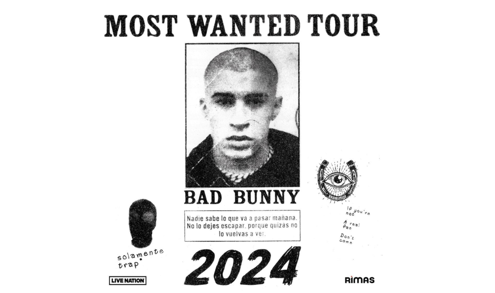
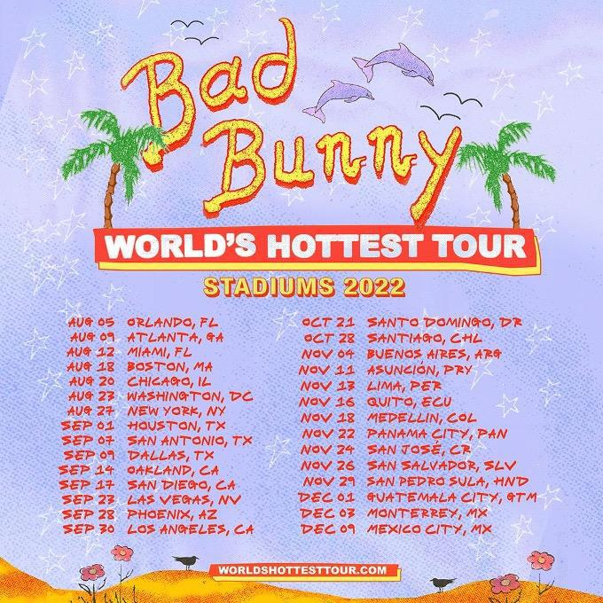
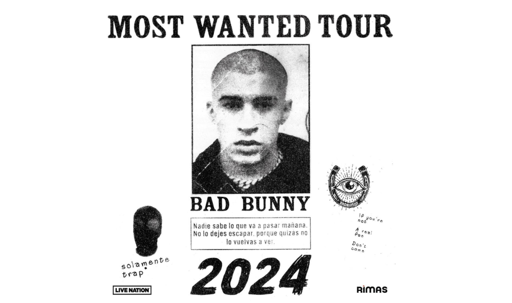

Bad Bunny
"Hoy se bebe, hoy se sale, ser bueno y fiel ya de nada vale" - Soy Peor (2016)
Conocer más"Hoy se bebe, hoy se sale, ser bueno y fiel ya de nada vale" - Soy Peor (2016)
Conocer másSu nombre es Benito Antonio Martínez Ocasio, nacido el 10 de marzo de 1994 en Vega Baja, Puerto Rico. Cantante, compositor y productor de varios éxitos mundiales, característico por tener un estilo único en el que junta el reggaetón, el trap latino y varios géneros musicales más. Su primer albúm no oficial es The Lost Tape, en donde cuenta con canciones como GET, CYNH2, Tentación, Solo Avísame, Contigo, etc.
No obstante, Bad Bunny saltó a la fama en 2016 con su primer sencillo discográfico 'Diles', una producción de sí mismo junto con DJ Orma, quien es parte de La Paciencia, el equipo de producción de Rimas Entertainment. Tras el éxito que tuvo el sencillo, Dj Luian, quien forma parte de Hear This Music lo fichó y produjo el remix, donde participaron Ozuna, Arcángel, Farruko y Ñengo Flow.
Logró conseguir por tres años consecutivos un Premio Grammy
Asimismo, fue nominado y premiado en los Billboard Music Awards
De entre algunas de sus mejores giras están

 


